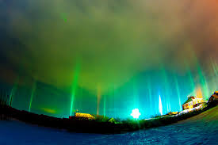

Have you ever noticed when you’ve walked into an area of unusual temperature change? where its a more vivid colour than the surrounding area? there’s a blurring perhaps or a sense of enhanced energy? Well you may have stumbled across an energy vortex which houses a spirit or inter-dimensional portal. Some psychics believe that on average most homes contain at least one of these portals.
Vortexes and portals can be categorized according to direction and nature of energy flow. Upflow Vortexes, Positive Portals: This is where the energy is flowing upward out of the earth, these vortexes are generally revitalising and feel positive. The energy here feels more electric than magnetic and is said to boost spiritual skills, to stretch and expand the consciousness. This energy is male or yang in nature and thus exhilarating and lively.
Mirrors and water are also popular ways of creating a portal to the other side. They are effective as long as the user knows how to use them properly, control them and ultimately close them down properly afterwards, otherwise you leave yourself open to unwanted guests using the portal. Many people inadvertently open portals and don’t even know they’ve done anything until the knock on effects become apparent. It is far more technical to close a portal than it is to open one.
Portals and vortexes exist more abundantly than we are aware of. We rarely see them with the naked eye but we can measure their effects with scientific and divination tools such as digital thermometers and pendulums. We can also feel or sense their effects by the energy vibrations, direction of flow and the subsequent entities that use them. Portals are not always required for other dimensions to interact with ours but they serve as a more convenient way of bridging the inter-dimensional divide and enabling interaction and experience between the different planes of existence.